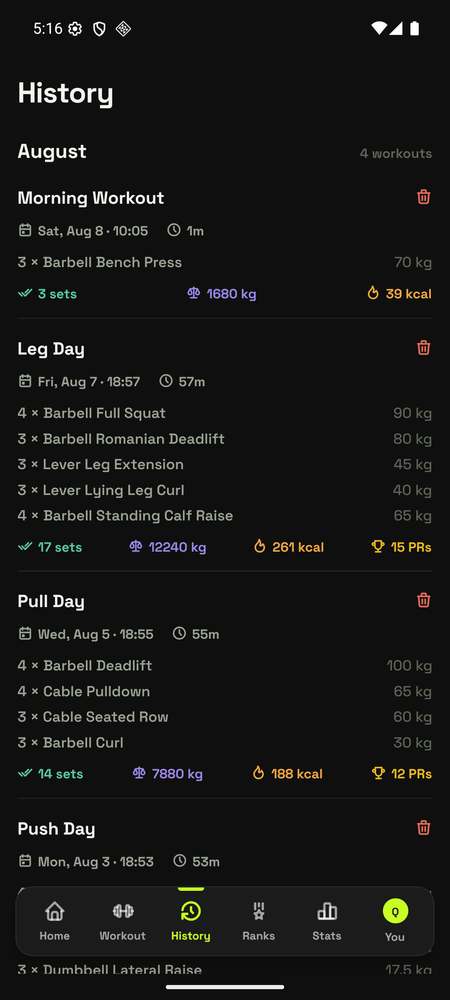
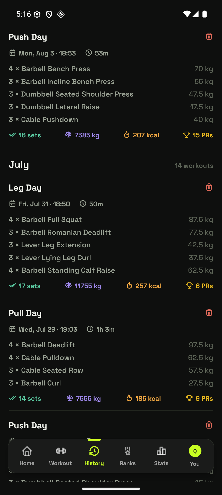

12 240 kgVolume, still on every card, after you removed it everywhere else.
5 rowsOf "3 × Barbell X … 90 kg" per card. The list is most of the ink.
0Visual difference between a 15-PR session and an empty one.
0Sense of rhythm — you cannot see a week off, or a streak, from the log.
Today
The real page, on your phone


Captured from the emulator just now.
What's wrong
1Everything is the same weight. Leg Day set 15 personal records and Morning Workout was three sets of bench, and on the page they are two identical blocks of grey rows.
2The exercise list eats the card. Five lines of "4 × Barbell Full Squat … 90 kg" is an inventory, not a memory. The number on the right is only the top weight, which is rarely the point.
3Volume and calories are still the headline stats — the exact two you deleted from Home and Stats. History is now the last place in the app that leads with them.
4No rhythm. A log's second job is showing your pattern: streaks, weeks off, whether you are training more than last month. Nothing here does that.
5Nothing connects a session to your rank, even though the app can say exactly which sessions moved it.
History
August4 sessions
Sat 8 Aug · 10:05
Morning Workout
1 min · 3 sets · bench only
1 PRChest
1 day off
Fri 7 Aug · 18:57
Leg Day
57 min · 17 sets · 5 exercises
15 PRs+4 pts
LegsBack
2 days off
Wed 5 Aug · 18:55
Pull Day
55 min · 14 sets · 4 exercises
12 PRs+2 pts
BackArms
2 days off
Mon 3 Aug · 18:53
Push Day
53 min · 16 sets · 5 exercises
6 PRsChest
Shoulders
July14 sessions
Fri 31 Jul · 18:50
Leg Day
50 min · 17 sets · 5 exercises
6 PRsLegs
The rail shows the gaps as clearly as the sessions.
Idea A
RecommendedMedium buildThe timeline
A rail down the left with a node per session — lime when it set a record —
and the empty days named between them. The exercise inventory becomes muscle chips; what earns
the space instead is what the session did: records, points, muscles worked.
What you gain
- Rhythm becomes visible. "2 days off" between nodes tells you more about your training than any per-session number, and no other screen shows it.
- Sessions stop looking equal. A lime node and a gold PR chip make Leg Day obviously the big one.
- Half the ink. Five inventory rows collapse to two or three chips, so twice as many sessions fit a screen.
- Volume and calories leave the card, finishing the job you started on Home and Stats.
What it costs
- You lose the at-a-glance exercise list. Knowing what you actually lifted now needs a tap.
- The gap markers need care — "0 days off" between two sessions on one day must not appear.
- A rail plus nodes is more layout than a flat list, and it has to keep working inside the virtualised SectionList.
History
August 20264 sessions
4SESSIONS
34PRs
+6POINTS
2h 46TIME
Morning WorkoutSat 8 · 1m
Best set Bench Press 70 kg × 3 · 1 PR
Leg DayFri 7 · 57m
Best set Full Squat 90 kg × 5 · 15 PRs
· +4 pts
Pull DayWed 5 · 55m
Best set Deadlift 100 kg × 4 · 12 PRs
· +2 pts
Push DayMon 3 · 53m
Best set Bench Press 67.5 kg × 5 · 6 PRs
July 202614 sessions
14SESSIONS
61PRs
+31POINTS
11hTIME
Each month opens with its own shape, then one line per session.
Idea B
Most informativeLarge buildThe month spread
Every month opens with a calendar of the days you trained and four numbers
that summarise it, then the sessions collapse to one line each: the best set, the records, the
points. History becomes a series of months you can compare rather than a queue of sessions.
What you gain
- The densest signal per screen. A month's shape, its totals and its sessions in one view.
- "Best set" is the honest headline — one line that says what the session was actually about, where the five-row list said nothing.
- Months become comparable. Scroll back and you can see July was 14 sessions and +31 points against August's 4.
- The heatmap is the rhythm view the app is missing, and it lives where you already look for the past.
What it costs
- Most to build. A calendar grid per section, month aggregates, and per-session best-set and points-gained, all inside a virtualised list.
- Points-gained per session means replaying the rank history — cheap, but new work.
- A month with two sessions gets a mostly empty calendar, which looks like failure rather than data.
History
August4 sessions
PUSHMorning Workout
Sat 8 Aug
Barbell Bench Press70 kg × 3
LEGLeg Day
Fri 7 Aug
Barbell Full Squat90 kg × 5
Romanian Deadlift80 kg × 8
+ 3 more exercises
PULLPull Day
Wed 5 Aug
Barbell Deadlift100 kg × 4
Cable Pulldown65 kg × 10
+ 2 more exercises
PUSHPush Day
Mon 3 Aug
Barbell Bench Press67.5 kg × 5
Incline Bench Press55 kg × 8
+ 3 more exercises
July14 sessions
LEGLeg Day
Fri 31 Jul
Barbell Full Squat87.5 kg × 5
+ 4 more exercises
A gold-edged card means the session set records.
Session cards
Keep the list, give it hierarchy. Each session becomes a real card with the
routine's tag, its two heaviest lifts as weight × reps rather than a five-row inventory,
and a gold edge when it set records. The least disruptive of the three and the closest to what
you already have.
What you gain
- Cards stop being interchangeable. A gold edge and a PR count do the work the current page leaves to reading.
- Weight × reps beats top-weight-only. "90 kg × 5" is a memory; "90 kg" is a fact with the interesting half missing.
- The PUSH / PULL / LEG tag matches Home's week strip, so the two screens finally speak the same language.
- Smallest change: the data is all computed already except the per-session points.
What it costs
- It reintroduces boxes on a page the CARDLESS rule says should be content on the page with hairlines. This is the one idea that argues with the design system.
- Still no rhythm — you cannot see a week off.
- "+ 3 more exercises" hides things behind a tap that used to be visible.
Side by side
What each one decides
| | Today | A · Timeline | B · Month spread | C · Session cards |
|---|
| A session's headline | Its inventory | What it achieved | Its best set | Its two top lifts |
| Volume & calories | Front and centre | Gone | Gone | Gone |
| PR session stands out | No | Lime node + chip | Gold count | Gold edge |
| Shows rhythm / days off | No | Named gaps | Month heatmap | No |
| Sessions per screen | ~2 | ~5 | ~6 | ~4 |
| Fits the CARDLESS rule | Yes | Yes | Yes | No — boxes return |
| Matches Home's language | No | Muscle chips | Partly | Session tags |
| New data needed | — | Points per session | Points, best set, month totals | Points, session tag |
| Build effort | — | Medium | Large | Small |
My read: A. It is the only one that answers "what does a log do that a list
cannot" — it shows the gaps, and the gaps are the story of anyone's training year. It also stays
cardless, halves the ink per session, and finishes removing volume from the app. B has the best
content and the worst cost/benefit; its month heatmap is worth stealing into A later as a section
header. C is the safe one, and the only one that fights the design system — bringing boxes back to
a page you deliberately un-boxed in the cardless migration.
Your call
Which do I build?